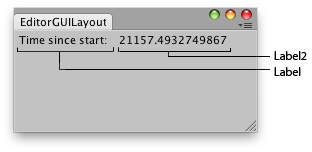

EditorGUILayout.LabelField
public static void LabelField(string label,
params GUILayoutOption[] options);
public static void LabelField(string label,
string label2,
params GUILayoutOption[] options);
public static void LabelField(string label,
string label2,
GUIStyle style,
params GUILayoutOption[] options);
public static void LabelField(GUIContent label,
GUIContent label2,
params GUILayoutOption[] options);
public static void LabelField(GUIContent label,
GUIContent label2,
GUIStyle style,
params GUILayoutOption[] options);
Parameters
| label | Label in front of the label field. | |
| label2 | The label to show to the right. | |
| options | An optional list of layout options that specify extra layout properties. Any values passed in here will override settings defined by the style.See Also: GUILayout.Width, GUILayout.Height, GUILayout.MinWidth, GUILayout.MaxWidth, GUILayout.MinHeight, GUILayout.MaxHeight, GUILayout.ExpandWidth, GUILayout.ExpandHeight. |
Description 描述
Make a label field. (Useful for showing read-only info.)

Shows a label in the editor (Label) with the seconds since the editor started (Label2).
// Shows a label in the editor with the seconds since the editor started using UnityEditor; using UnityEngine;
public class LabelFieldExample : EditorWindow { [MenuItem("Examples/Editor GUILayout Label Usage")] static void Init() { LabelFieldExample window = (LabelFieldExample)EditorWindow.GetWindow(typeof(LabelFieldExample), true, "My Empty Window"); window.Show(); }
void OnGUI() { EditorGUILayout.LabelField("Time since start: ", EditorApplication.timeSinceStartup.ToString()); this.Repaint(); } }